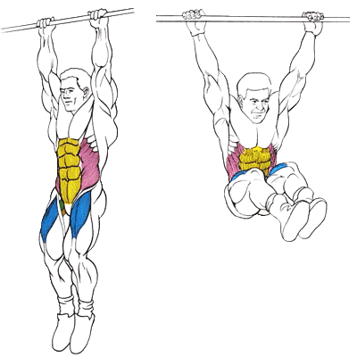

Упражнение на нижнюю часть пресса.
Исходное положение:
Взяться за турник. Руки на ширине плеч. Смотрим перед собой.
Техника выполнения:
Поднять ноги выше параллели.
Вернуться в исходное положение.
Рекомендации:
ноги немного согнуть в коленях.
при подъёме ног старайтесь бедрами коснуться живота.
не раскачивайтесь и выполняйте упражнение за счёт мышц пресса, а не инерции.